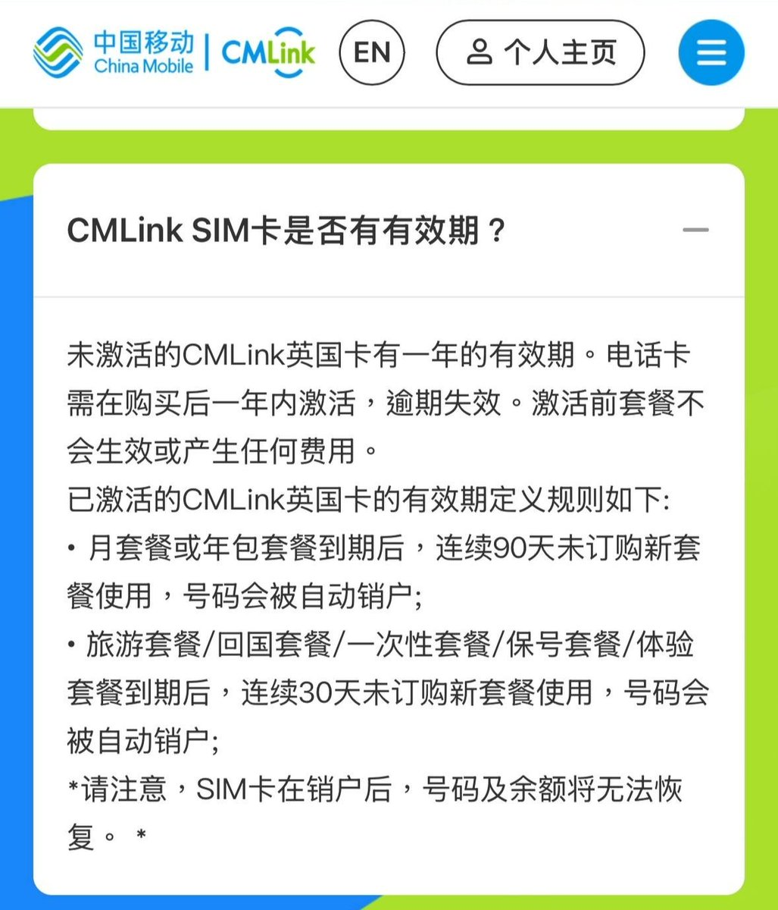

奶昔🥤
@realNyarime
移动来抢电信英国市场，同为EE虚商，漫游流量价格低至1.12/GB
中国移动CMLink UK推出中英月套餐，分别是30GB（10.8GBP）和150GB（16.8GBP）中英共享流量，还附赠国际长途1000分钟12方向
相比CTExcel UK的保号政策，移动英国在套餐过期后连续90天未订购新套餐将被自动销户，不过好处也有：
1）移动在中国内地NSA 5G覆盖广，比起电信体验会好些
2）二次回收号码少，比较不容易接到骚扰电话，套餐也带语音不会扣费
3）在年初补了VoLTE漫游
